Windshield Glass Installation |
| 1. Clean Windshield Glass |
 |
Using a scraper or equivalent, scrape off any adhesive and double-sided tape remaining on the windshield glass. (When reusing windshield glass)
Clean the outer circumference of the windshield glass with white gasoline.
| 2. Install Windshield Glass Stopper NO.2 |
Using the specified primer, apply it to the installation area of windshield glass stopper No.2 on the windshield glass.
Install a new windshield glass stopper No.2 to the windshield glass at the position shown in the illustration.
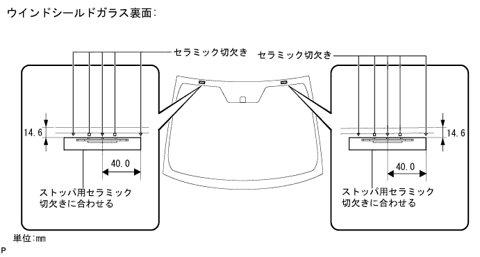
| 3. Install Windshield Glass Stopper NO.1 |
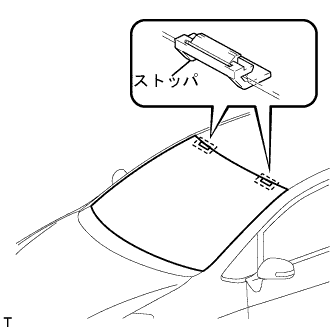 |
Install a new windshield glass stopper No.1.
| 4. Install Window Glass Adhesive Dam NO.2 |
Using the specified primer, apply it to the windshield glass adhesive dam installation area on the windshield glass.
Install a new windshield glass adhesive dam to the windshield glass at the position shown in the illustration.
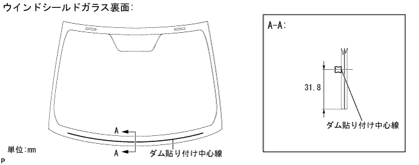
| 5. Install Windshield Outside Moulding |
Using the specified primer, apply it to the windshield outside moulding installation area on the windshield glass.
Install the windshield outside moulding to the windshield glass at the position shown in the illustration.
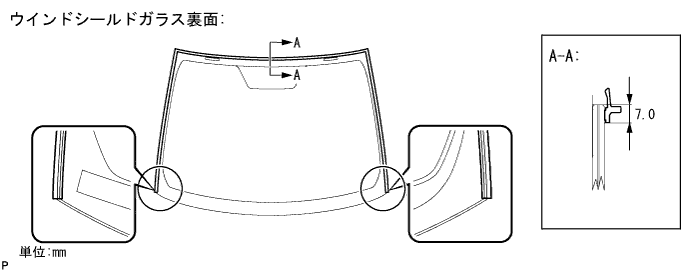
| 6. Install Windshield Glass Assembly |
Clean Body Installation Surface
 |
If the adhesive remaining on the vehicle has significant unevenness, smooth it using a utility knife.
Clean the body installation surface with white gasoline.
Work before Installing Windshield Glass Assembly
Attach suction cups to the windshield glass assembly.
Temporarily place the windshield glass assembly on the body and set it in a position where the widths at the top and sides of the windshield glass assembly are uniform (the clearance between the body and the edge of the windshield glass assembly is uniform).
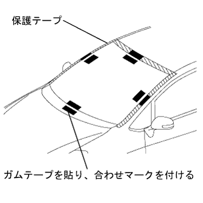 |
Apply packing tape or equivalent to the windshield glass assembly and body panel, and make matchmarks with a pen for installation. (When using new windshield glass)
Remove the windshield glass assembly.
Using the specified primer, apply it to the areas where the body surface of the vehicle is exposed (where no adhesive remains).
Using the specified primer, apply it to the bonding area of the windshield glass assembly at the positions shown in the illustration.
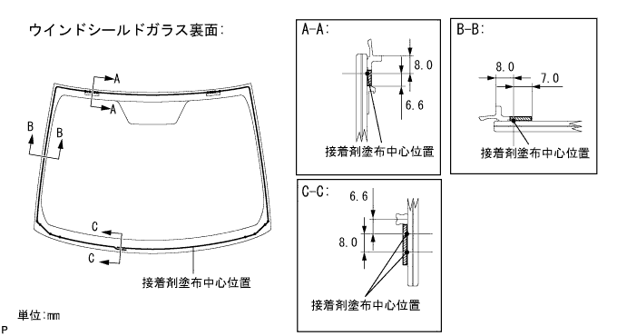
Cut off the tip of the adhesive nozzle as shown in the illustration below.
Load the adhesive into a sealant gun.
Apply the adhesive in a bead as shown in the illustration below.
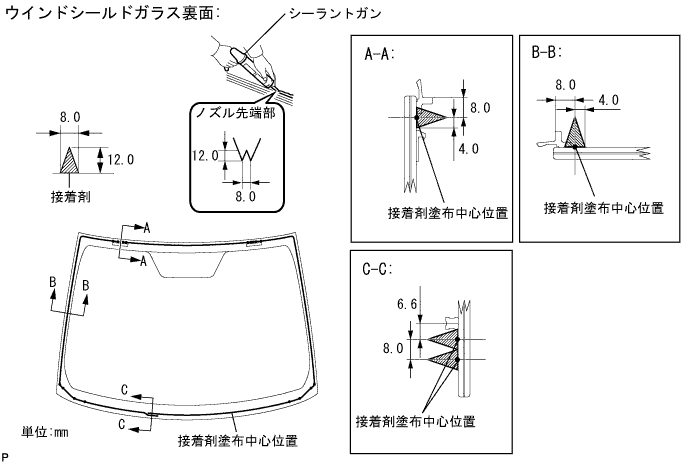
Holding the suction cups, align the matchmarks and install the windshield glass assembly.
Lightly press the front surface of the windshield glass assembly to ensure that it is fully sealed.
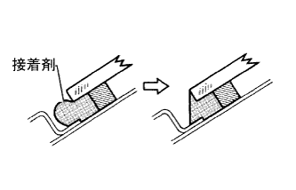 |
Using a spatula, correct any excess or insufficient adhesive.
Remove any excess adhesive before it hardens.
Using protective tape or equivalent, hold the windshield glass in place until the adhesive hardens.
 |
Connect the connector and engage the 2 clamps. (w/ Cold Area Specification)
| 7. Inspect for Water Leaks and Repair |
After the adhesive has hardened, pour water over the vehicle from the outside and check that there is no water leaking into the cabin.
If there is a water leak, allow it to dry and then fill with Three Cement Black.
Remove the protective tape and packing tape that were applied.
| 8. Install Roof Headlining Assembly |
| 9. Install Visor Holder |
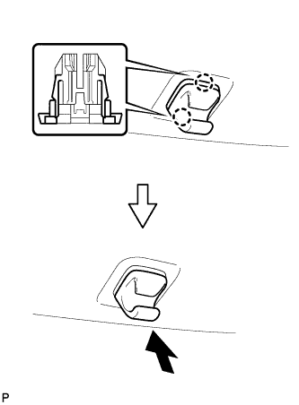 |
Engage the 2 claws.
Push in the tip of the visor holder to install the visor holder.
| 10. Install Room Light Assembly NO.1 |
 |
Insert the guide.
Engage the claws and install the room light cover.
 |
Engage the 4 claws and install the room light lens.
 |
Engage the 4 claws and install room light assembly No.1 to the room light switch base.
 |
Engage the 4 claws and install room light assembly No.1.
| 11. Install Assist Grip |
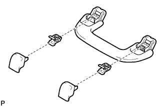 |
Install the 2 springs and 2 assist grip covers to the assist grip.
 |
Install the assist grip.
| 12. Install Visor Assembly RH |
Install the 2 springs to the visor assembly RH.
 |
Engage the 2 springs.
Temporarily attach the visor bracket cover to the visor assembly RH.
 |
Engage the 4 claws and install the visor assembly RH.
| 13. Install Visor Assembly LH |
| 14. Install Map Light Assembly (w/o Interior Illumination Light) |
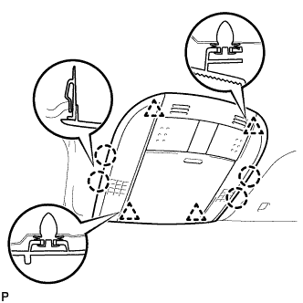 |
Connect the connector.
Engage the 4 claws and 4 clips, and install the map light assembly.
| 15. Install Interior Illumination Light Assembly NO.1 (w/ Interior Illumination Light) |
Connect the connector.
 |
Fix the harness to the clamp at the position shown in the illustration.
 |
Engage the 8 clips and install interior illumination light assembly No.1.
| 16. Install Front Door Opening Trim Weatherstrip RH |
 |
Align the paint mark (blue) of the weatherstrip with the arrow part on the body side shown in the illustration, and install the front door opening trim weatherstrip RH.
| 17. Install Front Door Opening Trim Weatherstrip LH |
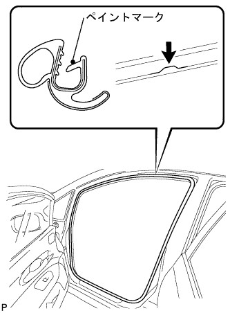 |
Align the paint mark (pink) of the weatherstrip with the arrow part on the body side shown in the illustration, and install the front door opening trim weatherstrip LH.
| 18. Install Front Pillar Garnish RH |
 |
Remove the protective cover.
Install a new front pillar garnish clip to the garnish.
 |
Insert the guide at the front end.
Engage the front pillar garnish clip and clip, and install the front pillar garnish RH.
| 19. Install Front Pillar Garnish Corner Piece RH |
 |
Insert the 2 guides B.
Engage the 5 claws and 2 guides A, and install the front pillar garnish corner piece RH.
Remove the protective tape that was applied.
| 20. Install Front Pillar Garnish LH |
 |
Remove the protective cover.
Install a new front pillar garnish clip to the garnish.
 |
Insert the guide at the front end.
Engage the front pillar garnish clip and clip, and install the front pillar garnish LH.
| 21. Install Front Pillar Garnish Corner Piece LH |
| 22. Install Inner Rear View Mirror Assembly (EC Inner Mirror) |
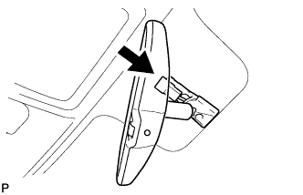 |
Slide the inner rear view mirror assembly in the direction of the arrow shown in the illustration.
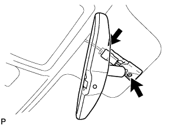 |
Using a torx socket wrench (T20), install the inner rear view mirror assembly with the screw.
Connect the connector.
| 23. Install Inner Rear View Mirror Stay Holder Cover (EC Inner Mirror) |
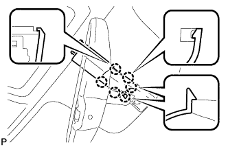 |
Engage the 6 claws of the inner rear view mirror cover.
 |
Slide it in the direction of the arrow shown in the illustration, engage the 2 claws and install the inner rear view mirror cover.
| 24. Install Inner Rear View Mirror Assembly (Normal Inner Mirror) |
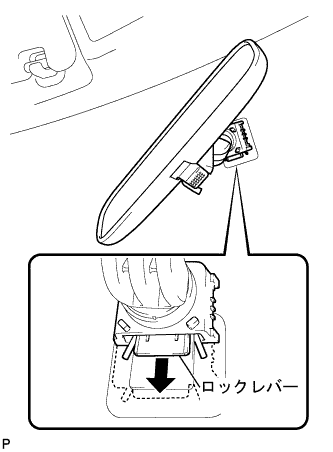 |
Slide the inner rear view mirror assembly in the direction of the arrow shown in the illustration to install it.
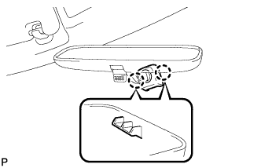 |
Engage the 2 claws and install the inner rear view mirror cover.
| 25. Install Cowl Top Ventilator Louver RH |
 |
Engage the 5 claws and install the cowl top ventilator louver RH as shown in the illustration.
| 26. Install Front Side Panel Protector NO.1 RH |
 |
Engage the pin and install the front side panel protector NO.1 RH.
| 27. Install Cowl Top Ventilator Louver LH |
 |
Engage the 11 claws and install the cowl top ventilator louver LH as shown in the illustration.
| 28. Install Front Side Panel Protector NO.1 LH |
 |
Engage the pin and install the front side panel protector NO.1 LH.
| 29. Install Hood to Cowl Top Seal |
 |
Engage the 7 clips and install the hood to cowl top seal.
| 30. Install Front Wiper Arm & Blade Assembly LH |
 |
Stop the windshield wiper motor assembly at the automatic stop position.
Using a round file or equivalent, clean the wiper arm serrations. (When reassembling)
Using a wire brush, clean the wiper pivot serrations.
 |
Install the front wiper arm & blade assembly LH with the front wiper arm nut so that it is in the position shown in the illustration.
| 31. Install Front Wiper Arm & Blade Assembly RH |
 |
Using a round file or equivalent, clean the wiper arm serrations. (When reassembling)
Using a wire brush, clean the wiper pivot serrations.
 |
Install the front wiper arm & blade assembly RH with the front wiper arm nut so that it is in the position shown in the illustration.
Operate the front wipers while spraying water or washer fluid on the glass, and check the wiping condition of the blades and that they do not interfere with the body.
| 32. Install Front Wiper Arm Head Cap |
 |
Install the 2 front wiper arm head caps.